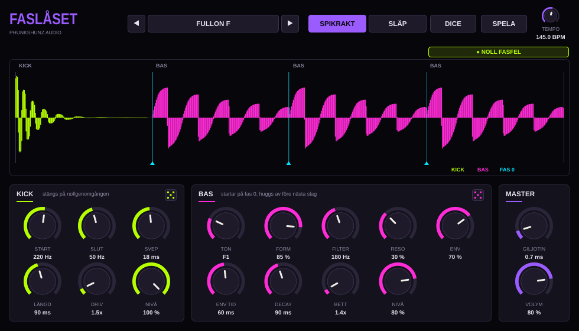

Stop zooming in on waveforms. FASLÅSET (Swedish for “the phase lock”) builds the kick and the bass in the same machine, so the bass always starts at phase zero exactly where the kick ends. No overlap. No cancellation. Every time.
In psytrance and heavy techno, the kick and the bass fight over the same 40 to 60 Hz. When they overlap, they cancel each other out and the low end turns to mush.
The usual fix is sidechain compression: duck the bass when the kick hits. It works, but it is a patch. The bass still starts at a random point of its waveform, and the kick still has a tail under it.
FASLÅSET solves it at the source. It is one instrument that plays both the kick and the bass, locked to your DAW's tempo with sample accuracy:

| On screen | English | On screen | English |
|---|---|---|---|
| SPIKRAKT | Dead straight (psy mode) | SLÄP | Drag (techno mode) |
| SLUT | End (pitch) | SVEP | Sweep |
| LÄNGD | Length | DRIV | Drive |
| NIVÅ | Level | TON | Note |
| FORM | Waveshape | BETT | Bite (saturation) |
| ENV TID | Envelope time | GILJOTIN | Guillotine |
| VOLYM | Volume | SPELA | Play |
| NOLL FASFEL | Zero phase errors | SPÄRR | Safety lock |
macOS: unzip FASLASET-macOS.zip in your Downloads folder, open Terminal and run:
bash ~/Downloads/FASLASET/installera.command
Quit your DAW completely and start it again. FASLASET shows up among the instruments. Requires macOS 11 or newer, Intel or Apple Silicon.
Windows: unzip FASLASET-Windows.zip and copy FASLASET.vst3 to C:\Program Files\Common Files\VST3.
FASLÅSET plays by itself as soon as your DAW plays. It follows the tempo and the position of the song. Put it on an instrument track and press play.
Think of it as a two-stage machine with one controller. The kick is stage one, the bass is stage two. They are never allowed to run at the same time.
At the start of every audio block FASLÅSET reads the tempo and the song position from your DAW and works out exactly which sample every 16th note lands on. It recalculates from the DAW's position every block, so it never drifts. If you loop or jump in the timeline, it stops cleanly and locks on again.
When the kick has played for its LÄNGD, it does not just stop. It waits for its waveform to cross zero going upwards, and stops there. Like closing a valve only when the pressure has equalised.
The bass oscillator starts at phase zero exactly on that crossing. The crossing usually falls between two samples, so FASLÅSET calculates where it really is and offsets the bass by that fraction. The result is a waveform that continues smoothly from kick to bass, with nothing underneath.
Before the next event, the bass is ramped down over GILJOTIN milliseconds (0.7 ms by default). The ramp is calculated so that it hits exactly zero on the sample before the next event. Short enough to sound like a hard cut, long enough to never click.
Every value that comes in is checked and clamped. If anything ever produced an invalid number, the block is muted, the engine resets and the SPÄRR counter goes up. The output also has a hard ceiling at 0 dBFS. In normal use none of this ever triggers.
| Mode | What it does |
|---|---|
| SPIKRAKT | Psytrance. Kick on the beat, bass on the three following 16th notes (K-B-B-B). Every bass note starts at phase zero and is cut before the next 16th. If the kick is long, the first bass note waits for the kick's zero crossing. |
| SLÄP | Techno. One long sub per beat that starts on the kick's zero crossing and rolls deep behind it, until the guillotine cuts it before the next kick. |
| START | Pitch at the start of the kick (the click and punch). |
| SLUT | Pitch the kick ends on (the body). |
| SVEP | How fast the pitch falls from START to SLUT. |
| LÄNGD | Time until the kick has faded to −60 dB. After that it closes on the next zero crossing. In SPIKRAKT, keep it shorter than a 16th note for the tightest groove. |
| DRIV | Saturation. Keeps zero crossings in place, so the lock still holds. |
| NIVÅ | Kick level. |
| TON | The bass note (A0 to E3). F1 = 43.65 Hz. |
| FORM | From sine to saw. Both start at zero going upwards. |
| FILTER | Low-pass cutoff. |
| RESO | Filter resonance. |
| ENV | How far the filter opens at the start of each note (up to five octaves). This is the psy pluck. |
| ENV TID | How fast the filter closes again. |
| DECAY | How fast the volume of each note fades. |
| BETT | Saturation. Also keeps zero crossings in place. |
| NIVÅ | Bass level. |
| GILJOTIN | Length of the cut ramp, 0.2 to 5 ms. |
| VOLYM | Output level. |
| SPELA | Own clock when the DAW is stopped, or in the standalone app. |
| TEMPO | Tempo for the own clock. Ignored while the DAW plays. |
The scope shows one beat at a time, triggered by the kick, so the picture stands still. The kick is acid green, the bass is magenta, and a cyan marker shows each point where the bass started at phase zero.
The badge above it reads NOLL FASFEL (zero phase errors) as long as kick and bass have never sounded on the same sample. It counts every sample, all the time.
Twelve presets: eight psy (full-on, morning, progressive, goa, dark, forest, hi-tech, swamp) and four techno (tunnel, industrial, sub pressure, concrete roll).
The dice in the KICK and BAS panels roll only that section. DICE in the top bar rolls both. The mode, the levels and the master settings are left alone. In SPIKRAKT, the kick dice always keeps the kick shorter than a 16th note at the current tempo.